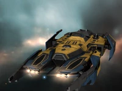
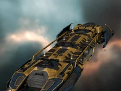

Буровой корабль
Каждая фракция в бою основывается на особенных тактических приемах. У каждой фракции они свои:
Амаррская Империя - привыкли выигрывать сражения лазерным оружием и дронами. Защищать свои корабли любят не столько маневром, сколько броней.
Государство Калдари - полагаются на гибридные орудия и ракетные установки. Защищать свои корабли любят не столько маневром, сколько силовыми полями.
Галлентская Федерация - в большей степени полагаются на гибридные орудия, в меньшей на дронов. От огня противника защищают свои корабли скоростью и броней.
Республика Минматар - их доктрина опирается на использование баллистического оружия в совокупности с защитой корабля всеми возможными средствами. Силовые поля, броня и скорость.
Окраинная рудная экспедиция - Как правило в бою корабли данная фракция не применяет. Они используют их только в качестве добытчиков и для первозки.
Организация «Гуристас» - Ракетные установки + поддержка дронов. От огня противника прячутся под силовыми полями.
«Нация Санши» - лазерное орудие и мощная аппаратура силовых полей
«Союз охотников за кровью» - Боевая электроника и лазерные орудия. От противников отгораживаются броней
«Картель Ангелов» - в совершенстве владение баллистическим оружием и маневры.
Корпорация «Серпентис» - полагаются на гибридные орудия, броневую-защиту и хорошо разогнанную тормозные характеристики своих кораблей.
Конгрегация сестёр-служительниц «Евы» - отдают предпочтение равного использования лазерного оружия и дронов. Они тихоходы, но так же и маневренны.
Верховное командование легиона Морду - ракетные установки. От огня противника защищаются силовыми полями и скоростью.

Буровые корабли, разработанные Окраинной Рудной Экспедицией, позволили достичь принципиально нового уровня добычи. Каждый из типов буровых кораблей превосходит другие по одной специфической характеристике; для «Прокурера» это прочность и бортовые системы защиты. Усилив корпус, конструкторы смогли снабдить этот корабль лишь одной точкой монтажа установки бурения льда или руды. Чтобы нивелировать влияние этого ограничения на объем добычи, они создали уникальную систему погрузки, которая позволяет этому единственному модулю работать с высочайшей эффективностью. Буровые корабли оснащены бортовыми электронными системами, специально спроектированными для работы с буровыми лазерами валовой выемки и установками для бурения льда.

Буровые корабли, разработанные Окраинной Рудной Экспедицией, позволили достичь принципиально нового уровня добычи. Каждый из типов буровых кораблей превосходит другие по одной специфической характеристике; для «Коветора» это объём выработки и дальность действия буровых лазеров. Дополнительный объем выработки имеет свою цену: по сравнению с соседями по классу «Коветор» весьма слабо защищён и имеет сравнительно небольшой отсек для руды. Буровые корабли оснащены бортовыми электронными системами, специально спроектированными для работы с буровыми лазерами валовой выемки и установками для бурения льда.